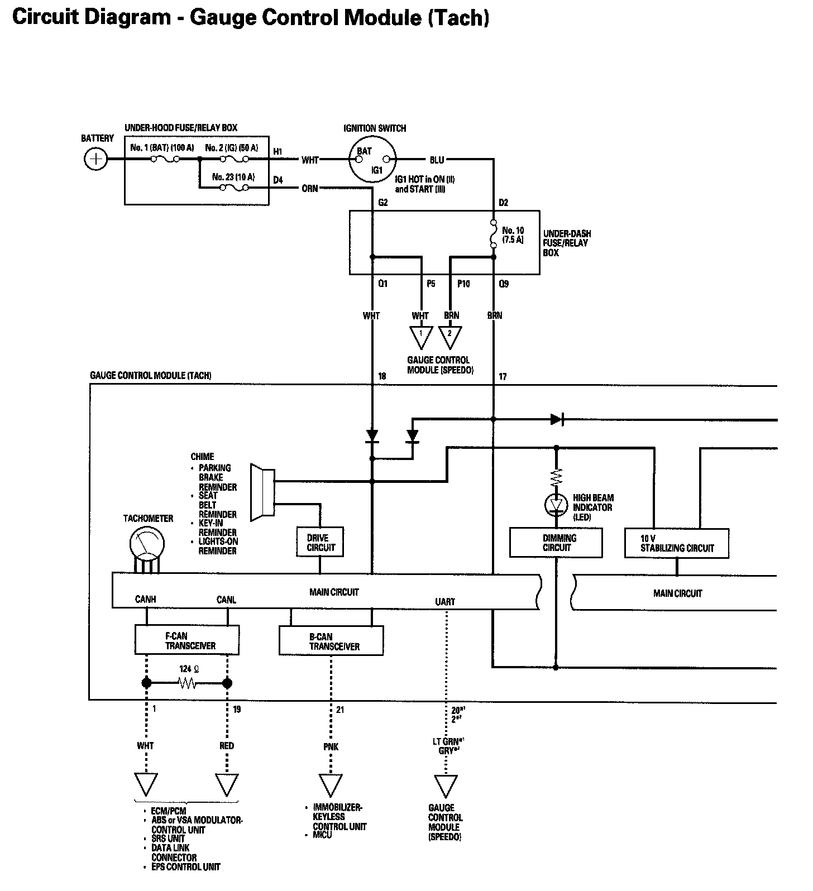
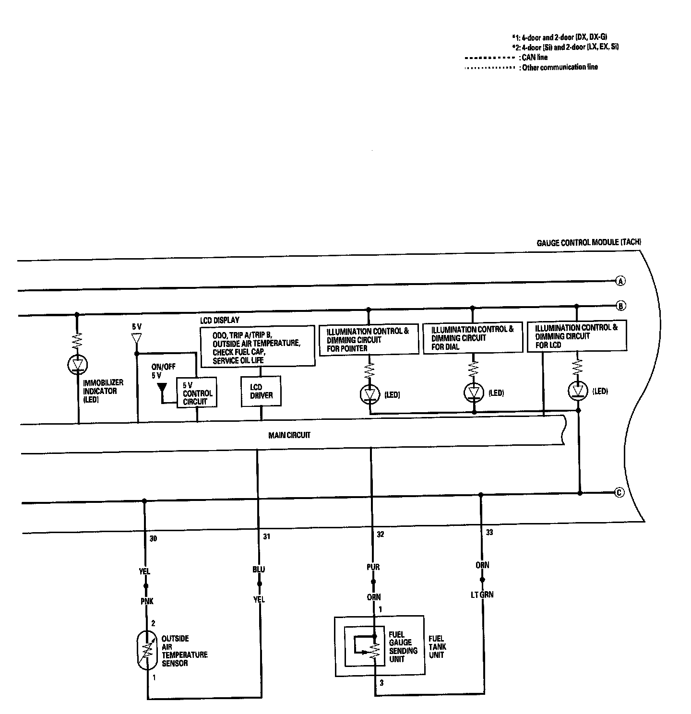
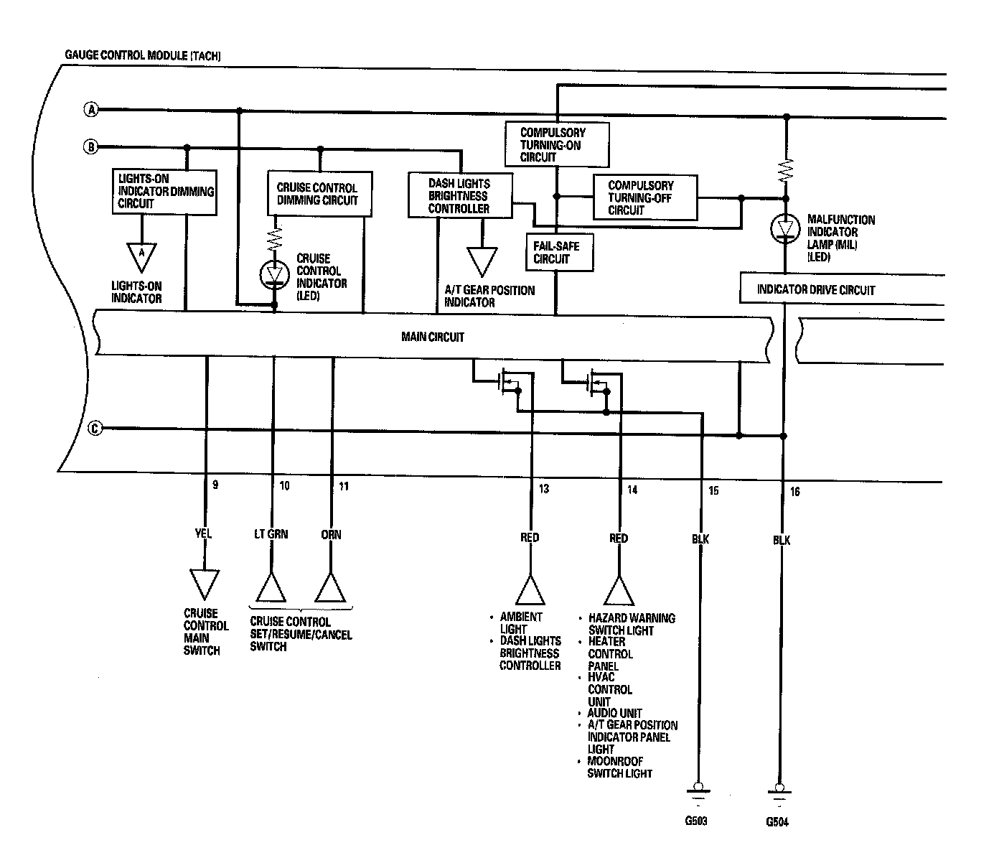
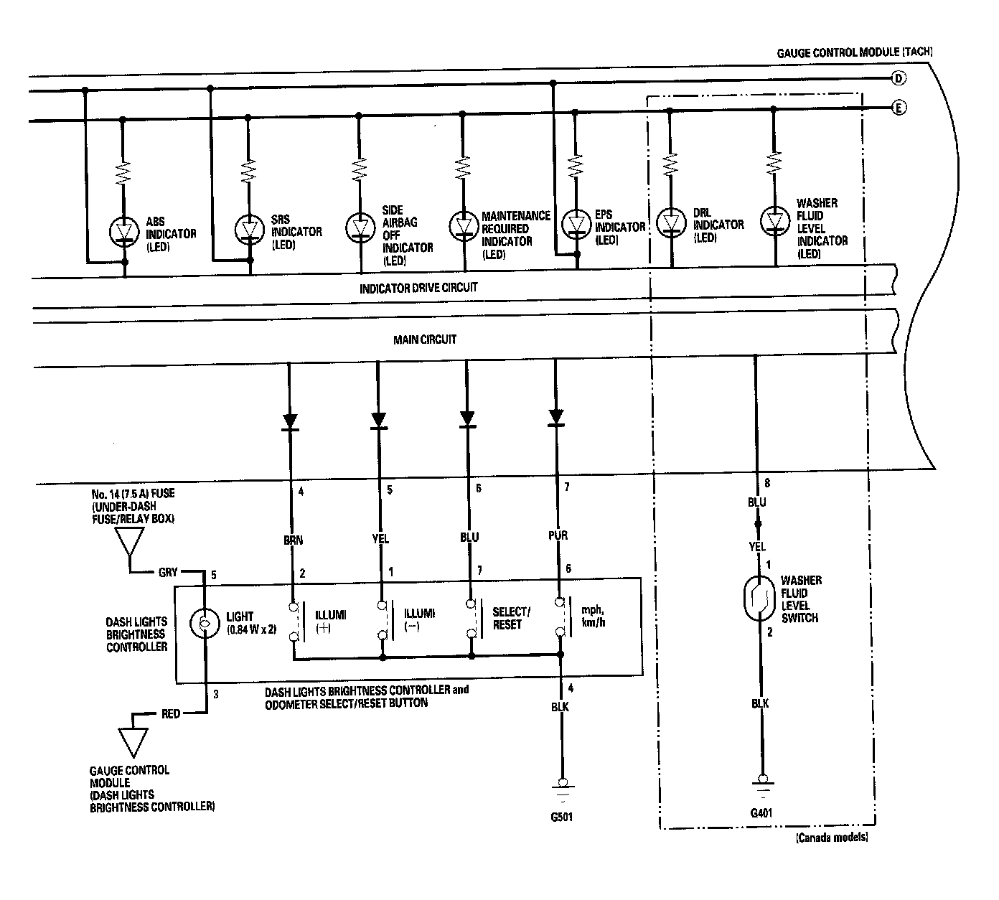
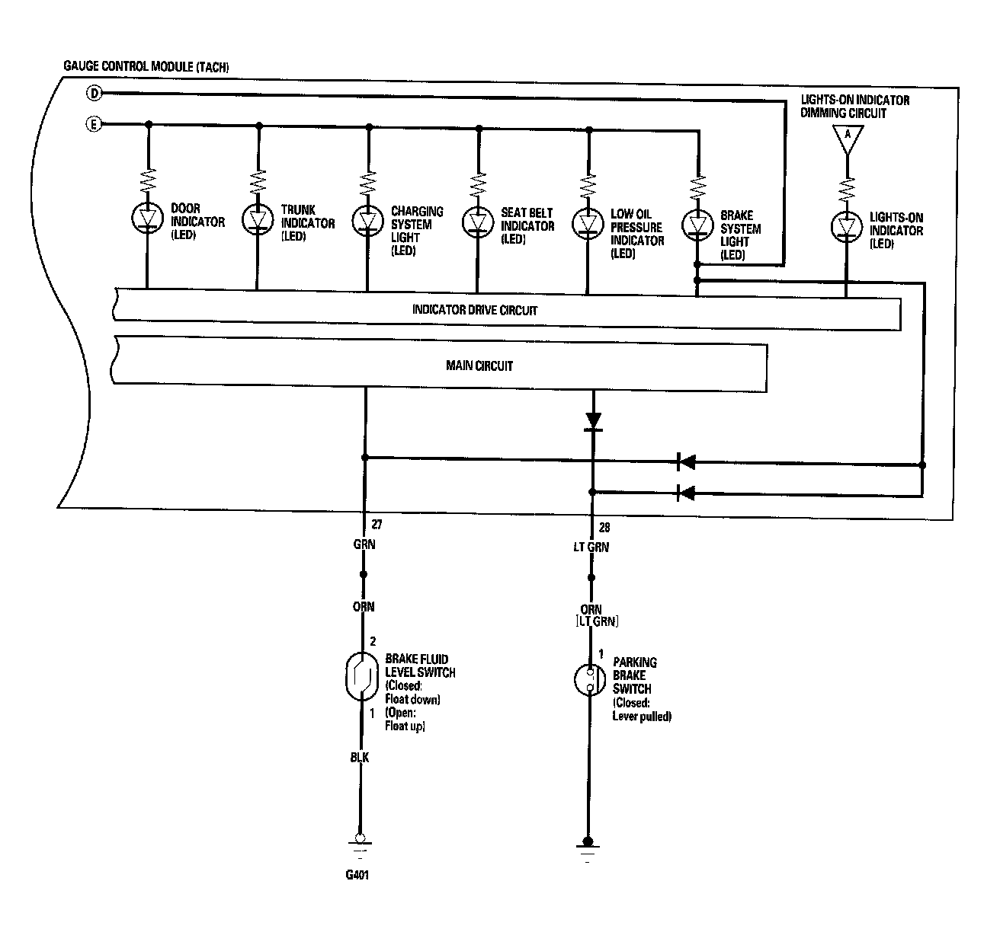
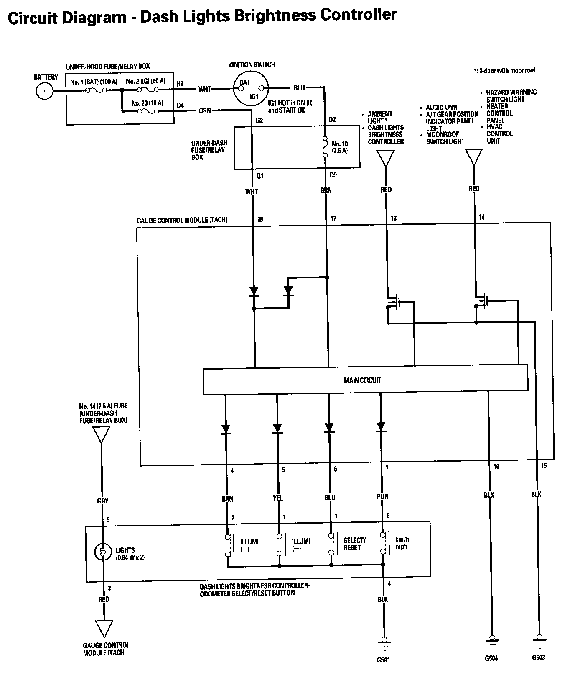
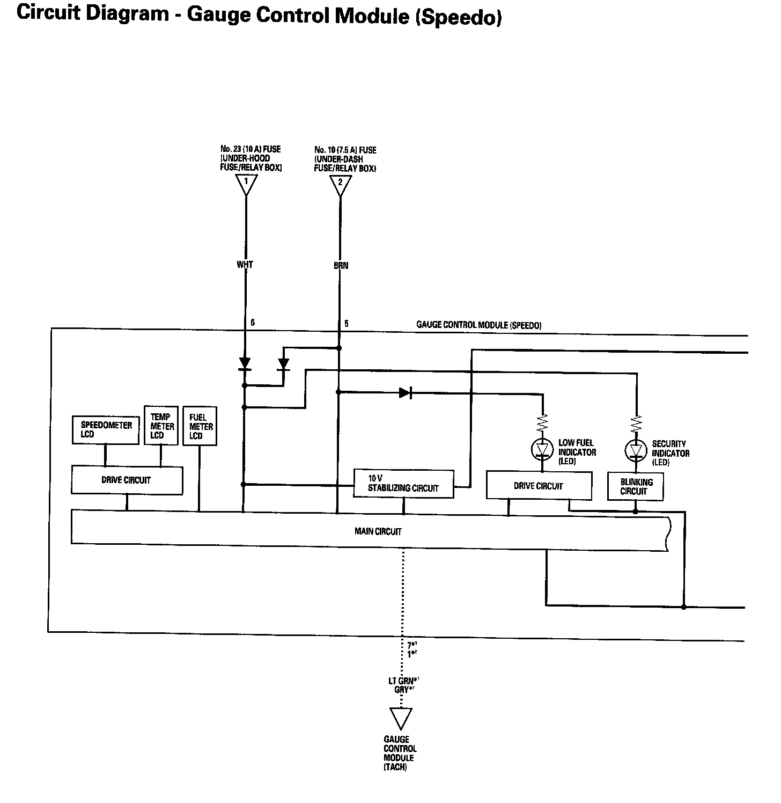
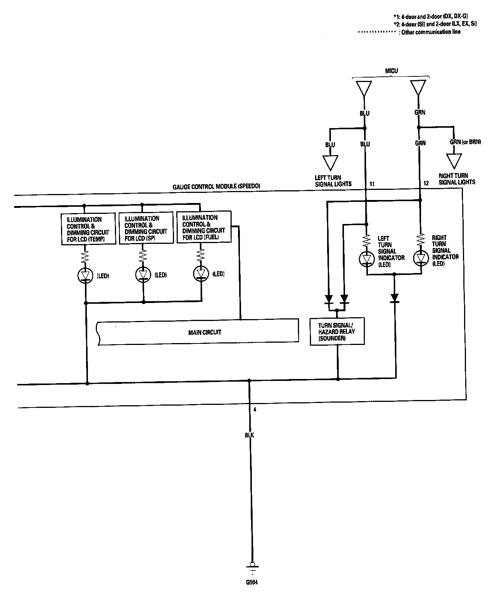

Gauges Circuit Diagram
Gauges Circuit Diagram - Gauge Control Module (Tach) Part 1:

Gauges Circuit Diagram - Gauge Control Module (Tach) Part 2:

Gauges Circuit Diagram - Gauge Control Module (Tach) Part 3:

Gauges Circuit Diagram - Gauge Control Module (Tach) Part 4:

Gauges Circuit Diagram - Gauge Control Module (Tach) Part 5:

Gauges Circuit Diagram - Dash Lights Brightness Controller:

Gauges Circuit Diagram - Gauge Control Module (Speedo) Part 1:

Gauges Circuit Diagram - Gauge Control Module (Speedo) Part 2:
